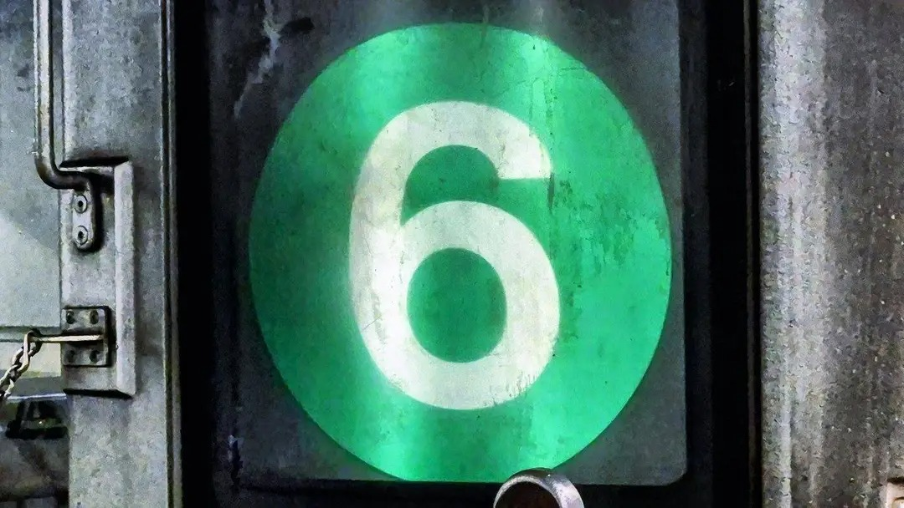

1
SPOT IT
That’s your train.
Or is it?
A familiar route. An unusual sign. A tiny detail that makes you look twice.
NYC IS YOUR PLAYGROUND
Turn the trains you spot into a collection of NYC subway signs. The classics, the express diamonds, the details you used to walk right past.
A little side quest for your next ride.

SPOTTED IN THE WILDNot just your line.
Your next discovery.
THE LITTLE SIDE QUEST
The idea is simple: make the familiar a little more interesting. Here’s the experience we’re building.
SPOT IT
A familiar route. An unusual sign. A tiny detail that makes you look twice.
SNAP IT
Take a clear photo of the sign. It’s the starting point for a closer look.
DISCOVER IT
Explore the design behind the bullet and give your next ride something new to chase.
A PEEK AT THE DEX
Every bullet has a backstory.
Tap a sign to discover its route through history.
A green diamond marks the Pelham Express: a faster Bronx ride with local stops in Manhattan.
DIAMOND / EXPRESSIllustrative catalog preview. Reference artwork includes historical and proposed designs; the app is in development.
THE NEXT RIDE IS A NEW CHANCE
We’re building TrainDex for the ones who take the long way, look out the window, and always notice the sign.
Follow the build on GitHub